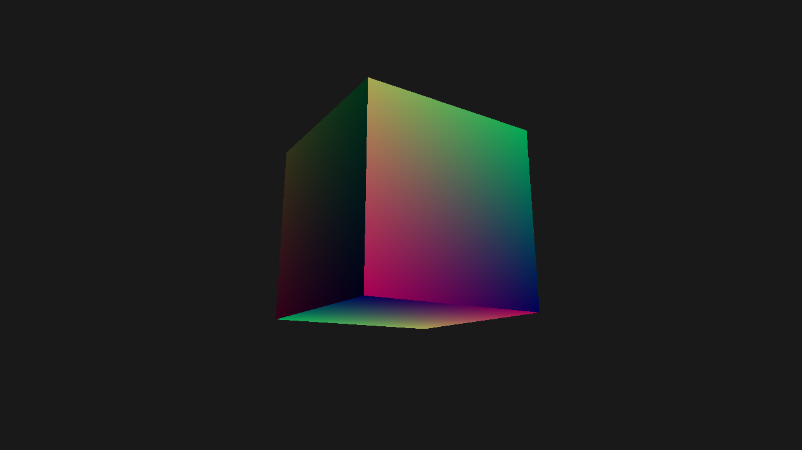

Mesh Shading
In this tutorial, you'll learn how to use mesh shading with Zenith.NET. We'll render a simple cube using the mesh shading pipeline, demonstrating the modern GPU-driven geometry processing approach.
Note
This tutorial requires a GPU with mesh shading support. Check Context.Capabilities.MeshShadingSupported before using mesh shading features.
Overview
We'll create a MeshShadingRenderer class that:
- Defines vertex and meshlet data structures
- Creates structured buffers for vertices, indices, and meshlets
- Builds a mesh shading pipeline with mesh and pixel shaders
- Dispatches mesh shading workgroups to render geometry
Key Concepts
What is Mesh Shading?
Mesh shading replaces the traditional vertex processing pipeline (Input Assembler → Vertex Shader → optional tessellation/geometry) with a more flexible compute-like model:
| Traditional Pipeline | Mesh Shading Pipeline |
|---|---|
| Input Assembler | (removed) |
| Vertex Shader | (removed) |
| Hull/Domain Shader | (removed) |
| Geometry Shader | (removed) |
| - | Amplification Shader (optional) |
| - | Mesh Shader |
| Rasterizer | Rasterizer |
| Pixel Shader | Pixel Shader |
Meshlet Architecture
The mesh shading pipeline works with meshlets - small chunks of geometry that can be processed independently:
Mesh
├── Meshlet 0 (up to 64-256 vertices, 64-256 primitives)
├── Meshlet 1
├── Meshlet 2
└── ...
Each meshlet contains:
- VertexOffset: Starting index in the vertex buffer
- VertexCount: Number of vertices in this meshlet
- PrimitiveOffset: Starting index in the index buffer
- PrimitiveCount: Number of triangles in this meshlet
Pipeline Stages
| Shader Stage | Description |
|---|---|
| Amplification (optional) | Determines how many mesh shading workgroups to spawn (LOD, culling) |
| Mesh | Outputs vertices and primitives directly to the rasterizer |
| Pixel | Standard fragment shading |
The Renderer Class
Create a new file Renderers/MeshShadingRenderer.cs:
namespace ZenithTutorials.Renderers;
internal unsafe class MeshShadingRenderer : IRenderer
{
private const uint MaxPrimitives = 126;
private const string ShaderSource = """
static const uint MaxVertices = 64;
static const uint MaxPrimitives = 126;
struct Vertex
{
float3 Position;
float3 Normal;
float2 TexCoord;
};
struct Meshlet
{
uint VertexOffset;
uint VertexCount;
uint PrimitiveOffset;
uint PrimitiveCount;
};
struct TransformConstants
{
float4x4 MVP;
};
struct VertexOutput
{
float4 Position : SV_Position;
float3 Normal : NORMAL;
float2 TexCoord : TEXCOORD0;
};
ConstantBuffer<TransformConstants> transform;
StructuredBuffer<Vertex> vertices;
StructuredBuffer<uint3> indices;
StructuredBuffer<Meshlet> meshlets;
[shader("mesh")]
[numthreads(MaxPrimitives, 1, 1)]
[outputtopology("triangle")]
void MSMain(in uint groupId : SV_GroupID,
in uint groupThreadId : SV_GroupThreadID,
OutputVertices<VertexOutput, MaxVertices> outVertices,
OutputIndices<uint3, MaxPrimitives> outIndices)
{
Meshlet meshlet = meshlets[groupId];
SetMeshOutputCounts(meshlet.VertexCount, meshlet.PrimitiveCount);
if (groupThreadId < meshlet.VertexCount)
{
Vertex vertex = vertices[meshlet.VertexOffset + groupThreadId];
VertexOutput output;
output.Position = mul(float4(vertex.Position, 1.0), transform.MVP);
output.Normal = vertex.Normal;
output.TexCoord = vertex.TexCoord;
outVertices[groupThreadId] = output;
}
if (groupThreadId < meshlet.PrimitiveCount)
{
outIndices[groupThreadId] = indices[meshlet.PrimitiveOffset + groupThreadId];
}
}
[shader("pixel")]
float4 PSMain(VertexOutput input) : SV_Target
{
// Simple directional lighting
float3 lightDir = normalize(float3(1.0, 1.0, -1.0));
float ndotl = max(dot(normalize(input.Normal), lightDir), 0.0);
// Base color from texture coordinates
float3 baseColor = float3(input.TexCoord, 0.5);
// Ambient + diffuse lighting
float3 ambient = baseColor * 0.2;
float3 diffuse = baseColor * ndotl * 0.8;
return float4(ambient + diffuse, 1.0);
}
""";
private readonly Buffer vertexBuffer;
private readonly Buffer indexBuffer;
private readonly Buffer meshletBuffer;
private readonly Buffer constantBuffer;
private readonly ResourceLayout resourceLayout;
private readonly ResourceTable resourceTable;
private readonly MeshShadingPipeline pipeline;
private readonly uint meshletCount;
private float rotationAngle;
public MeshShadingRenderer()
{
if (!App.Context.Capabilities.MeshShadingSupported)
{
throw new NotSupportedException("Mesh shading is not supported on this device.");
}
Vertex[] cubeVertices =
[
// Front face
new() { Position = new(-0.5f, -0.5f, 0.5f), Normal = new( 0, 0, 1), TexCoord = new(0, 1) },
new() { Position = new( 0.5f, -0.5f, 0.5f), Normal = new( 0, 0, 1), TexCoord = new(1, 1) },
new() { Position = new( 0.5f, 0.5f, 0.5f), Normal = new( 0, 0, 1), TexCoord = new(1, 0) },
new() { Position = new(-0.5f, 0.5f, 0.5f), Normal = new( 0, 0, 1), TexCoord = new(0, 0) },
// Back face
new() { Position = new( 0.5f, -0.5f, -0.5f), Normal = new( 0, 0, -1), TexCoord = new(0, 1) },
new() { Position = new(-0.5f, -0.5f, -0.5f), Normal = new( 0, 0, -1), TexCoord = new(1, 1) },
new() { Position = new(-0.5f, 0.5f, -0.5f), Normal = new( 0, 0, -1), TexCoord = new(1, 0) },
new() { Position = new( 0.5f, 0.5f, -0.5f), Normal = new( 0, 0, -1), TexCoord = new(0, 0) },
// Left face
new() { Position = new(-0.5f, -0.5f, -0.5f), Normal = new(-1, 0, 0), TexCoord = new(0, 1) },
new() { Position = new(-0.5f, -0.5f, 0.5f), Normal = new(-1, 0, 0), TexCoord = new(1, 1) },
new() { Position = new(-0.5f, 0.5f, 0.5f), Normal = new(-1, 0, 0), TexCoord = new(1, 0) },
new() { Position = new(-0.5f, 0.5f, -0.5f), Normal = new(-1, 0, 0), TexCoord = new(0, 0) },
// Right face
new() { Position = new( 0.5f, -0.5f, 0.5f), Normal = new( 1, 0, 0), TexCoord = new(0, 1) },
new() { Position = new( 0.5f, -0.5f, -0.5f), Normal = new( 1, 0, 0), TexCoord = new(1, 1) },
new() { Position = new( 0.5f, 0.5f, -0.5f), Normal = new( 1, 0, 0), TexCoord = new(1, 0) },
new() { Position = new( 0.5f, 0.5f, 0.5f), Normal = new( 1, 0, 0), TexCoord = new(0, 0) },
// Top face
new() { Position = new(-0.5f, 0.5f, 0.5f), Normal = new( 0, 1, 0), TexCoord = new(0, 1) },
new() { Position = new( 0.5f, 0.5f, 0.5f), Normal = new( 0, 1, 0), TexCoord = new(1, 1) },
new() { Position = new( 0.5f, 0.5f, -0.5f), Normal = new( 0, 1, 0), TexCoord = new(1, 0) },
new() { Position = new(-0.5f, 0.5f, -0.5f), Normal = new( 0, 1, 0), TexCoord = new(0, 0) },
// Bottom face
new() { Position = new(-0.5f, -0.5f, -0.5f), Normal = new( 0, -1, 0), TexCoord = new(0, 1) },
new() { Position = new( 0.5f, -0.5f, -0.5f), Normal = new( 0, -1, 0), TexCoord = new(1, 1) },
new() { Position = new( 0.5f, -0.5f, 0.5f), Normal = new( 0, -1, 0), TexCoord = new(1, 0) },
new() { Position = new(-0.5f, -0.5f, 0.5f), Normal = new( 0, -1, 0), TexCoord = new(0, 0) }
];
uint[] cubeIndices =
[
0, 1, 2, 0, 2, 3,
4, 5, 6, 4, 6, 7,
8, 9, 10, 8, 10, 11,
12, 13, 14, 12, 14, 15,
16, 17, 18, 16, 18, 19,
20, 21, 22, 20, 22, 23
];
Meshlet[] meshlets =
[
new()
{
VertexOffset = 0,
VertexCount = (uint)cubeVertices.Length,
PrimitiveOffset = 0,
PrimitiveCount = (uint)cubeIndices.Length / 3
}
];
meshletCount = (uint)meshlets.Length;
// Create vertex buffer
vertexBuffer = App.Context.CreateBuffer(new()
{
SizeInBytes = (uint)(sizeof(Vertex) * cubeVertices.Length),
StrideInBytes = (uint)sizeof(Vertex),
Flags = BufferUsageFlags.ShaderResource
});
vertexBuffer.Upload(cubeVertices, 0);
// Create index buffer (3 uints per triangle = uint3 in shader)
indexBuffer = App.Context.CreateBuffer(new()
{
SizeInBytes = (uint)(sizeof(uint) * cubeIndices.Length),
StrideInBytes = sizeof(uint) * 3, // uint3 stride
Flags = BufferUsageFlags.ShaderResource
});
indexBuffer.Upload(cubeIndices, 0);
meshletBuffer = App.Context.CreateBuffer(new()
{
SizeInBytes = (uint)(sizeof(Meshlet) * meshlets.Length),
StrideInBytes = (uint)sizeof(Meshlet),
Flags = BufferUsageFlags.ShaderResource
});
meshletBuffer.Upload(meshlets, 0);
constantBuffer = App.Context.CreateBuffer(new()
{
SizeInBytes = (uint)sizeof(TransformConstants),
StrideInBytes = (uint)sizeof(TransformConstants),
Flags = BufferUsageFlags.Constant | BufferUsageFlags.MapWrite
});
resourceLayout = App.Context.CreateResourceLayout(new()
{
Bindings = BindingHelper.Bindings
(
new() { Type = ResourceType.ConstantBuffer, Count = 1, StageFlags = ShaderStageFlags.Mesh },
new() { Type = ResourceType.StructuredBuffer, Count = 1, StageFlags = ShaderStageFlags.Mesh },
new() { Type = ResourceType.StructuredBuffer, Count = 1, StageFlags = ShaderStageFlags.Mesh },
new() { Type = ResourceType.StructuredBuffer, Count = 1, StageFlags = ShaderStageFlags.Mesh }
)
});
resourceTable = App.Context.CreateResourceTable(new()
{
Layout = resourceLayout,
Resources = [constantBuffer, vertexBuffer, indexBuffer, meshletBuffer]
});
using Shader meshShader = App.Context.LoadShaderFromSource(ShaderSource, "MSMain", ShaderStageFlags.Mesh);
using Shader pixelShader = App.Context.LoadShaderFromSource(ShaderSource, "PSMain", ShaderStageFlags.Pixel);
pipeline = App.Context.CreateMeshShadingPipeline(new()
{
RenderStates = new()
{
RasterizerState = RasterizerStates.CullBack,
DepthStencilState = DepthStencilStates.Default,
BlendState = BlendStates.Opaque
},
Amplification = null,
Mesh = meshShader,
Pixel = pixelShader,
ResourceLayout = resourceLayout,
PrimitiveTopology = PrimitiveTopology.TriangleList,
Output = App.SwapChain.FrameBuffer.Output,
MeshThreadGroupSizeX = MaxPrimitives,
MeshThreadGroupSizeY = 1,
MeshThreadGroupSizeZ = 1
});
}
public void Update(double deltaTime)
{
rotationAngle += (float)deltaTime;
}
public void Render()
{
Matrix4x4 model = Matrix4x4.CreateRotationY(rotationAngle) * Matrix4x4.CreateRotationX(rotationAngle * 0.5f);
Matrix4x4 view = Matrix4x4.CreateLookAt(new(0, 0, 3), Vector3.Zero, Vector3.UnitY);
Matrix4x4 projection = Matrix4x4.CreatePerspectiveFieldOfView(float.DegreesToRadians(45.0f), (float)App.Width / App.Height, 0.1f, 100.0f);
constantBuffer.Upload([new TransformConstants() { MVP = model * view * projection }], 0);
CommandBuffer commandBuffer = App.Context.Graphics.CommandBuffer();
commandBuffer.BeginRenderPass(App.SwapChain.FrameBuffer, new()
{
ColorValues = [new(0.1f, 0.1f, 0.1f, 1.0f)],
Depth = 1.0f,
Stencil = 0,
Flags = ClearFlags.All
}, resourceTable);
commandBuffer.SetPipeline(pipeline);
commandBuffer.SetResourceTable(resourceTable);
commandBuffer.DispatchMesh(meshletCount, 1, 1);
commandBuffer.EndRenderPass();
commandBuffer.Submit(waitForCompletion: true);
}
public void Resize(uint width, uint height)
{
}
public void Dispose()
{
pipeline.Dispose();
resourceTable.Dispose();
resourceLayout.Dispose();
constantBuffer.Dispose();
meshletBuffer.Dispose();
indexBuffer.Dispose();
vertexBuffer.Dispose();
}
}
/// <summary>
/// Vertex structure with position and normal.
/// </summary>
[StructLayout(LayoutKind.Sequential)]
file struct Vertex
{
public Vector3 Position;
public Vector3 Normal;
public Vector2 TexCoord;
}
/// <summary>
/// Meshlet structure defining a chunk of geometry.
/// </summary>
[StructLayout(LayoutKind.Sequential)]
file struct Meshlet
{
public uint VertexOffset;
public uint VertexCount;
public uint PrimitiveOffset;
public uint PrimitiveCount;
}
/// <summary>
/// Transform constants for the mesh.
/// </summary>
[StructLayout(LayoutKind.Sequential)]
file struct TransformConstants
{
public Matrix4x4 MVP;
}
Running the Tutorial
Update your Program.cs to run the MeshShadingRenderer:
using ZenithTutorials;
using ZenithTutorials.Renderers;
App.Run<MeshShadingRenderer>();
App.Cleanup();
Run the application:
dotnet run
Result

Code Breakdown
Checking Mesh Shading Support
if (!App.Context.Capabilities.MeshShadingSupported)
{
throw new NotSupportedException("Mesh shading is not supported on this device.");
}
Always check Capabilities.MeshShadingSupported before using mesh shading features.
Meshlet Data Structure
[StructLayout(LayoutKind.Sequential)]
file struct Meshlet
{
public uint VertexOffset;
public uint VertexCount;
public uint PrimitiveOffset;
public uint PrimitiveCount;
}
Each meshlet describes a chunk of geometry:
- VertexOffset/Count: Range of vertices in the vertex buffer
- PrimitiveOffset/Count: Range of triangles in the index buffer
Mesh Shader Entry Point
[shader("mesh")]
[numthreads(MaxPrimitives, 1, 1)]
[outputtopology("triangle")]
void MSMain(in uint groupId : SV_GroupID,
in uint groupThreadId : SV_GroupThreadID,
OutputVertices<VertexOutput, MaxVertices> outVertices,
OutputIndices<uint3, MaxPrimitives> outIndices)
Key attributes:
| Attribute | Description |
|---|---|
[shader("mesh")] |
Marks this as a mesh shader entry point |
[numthreads(X,Y,Z)] |
Thread group size (typically MaxPrimitives threads) |
[outputtopology("triangle")] |
Output primitive type |
OutputVertices<T, N> |
Output vertex array (max N vertices) |
OutputIndices<uint3, N> |
Output index array (max N triangles) |
Setting Output Counts
SetMeshOutputCounts(meshlet.VertexCount, meshlet.PrimitiveCount);
This must be called once per workgroup to declare how many vertices and primitives will be output.
Dispatching Mesh Shading
commandBuffer.DispatchMesh(meshletCount, 1, 1);
Unlike traditional Draw calls, mesh shading uses DispatchMesh(X, Y, Z) to launch workgroups:
- Each workgroup processes one meshlet
- Total workgroups =
meshletCount × 1 × 1
Creating the Pipeline
pipeline = App.Context.CreateMeshShadingPipeline(new()
{
RenderStates = new() { ... },
Amplification = null,
Mesh = meshShader,
Pixel = pixelShader,
ResourceLayout = resourceLayout,
PrimitiveTopology = PrimitiveTopology.TriangleList,
Output = App.SwapChain.FrameBuffer.Output,
MeshThreadGroupSizeX = MaxPrimitives,
MeshThreadGroupSizeY = 1,
MeshThreadGroupSizeZ = 1
});
The MeshShadingPipelineDesc requires:
Amplification- The compiled amplification shader (optional)Mesh- The compiled mesh shaderPixel- The compiled pixel shaderResourceLayout- Resource bindings (same as graphics pipelines)ObjectThreadGroupSizeX/Y/Z- Must match[numthreads()]in the amplification shader (if used)MeshThreadGroupSizeX/Y/Z- Must match[numthreads()]in the mesh shader
Amplification Shader (Optional)
For more advanced scenarios, you can add an amplification shader to dynamically control meshlet dispatch:
struct AmplificationPayload
{
uint MeshletIndices[32];
};
[shader("amplification")]
[numthreads(32, 1, 1)]
void ASMain(in uint groupId : SV_GroupID,
in uint groupThreadId : SV_GroupThreadID)
{
// Frustum culling, LOD selection, etc.
bool visible = /* culling logic */;
if (visible)
{
AmplificationPayload payload;
payload.MeshletIndices[groupThreadId] = groupId * 32 + groupThreadId;
// Dispatch mesh shading workgroups
DispatchMesh(visibleCount, 1, 1, payload);
}
}
Best Practices
- Meshlet Size: Keep meshlets within hardware limits (typically 64-256 vertices, 64-126 primitives)
- Thread Utilization: Size
numthreadsto match your maximum primitive count - Early Out: Check thread bounds before writing to output arrays
- Preprocessing: Generate meshlets offline for complex models
- Culling: Use amplification shaders for GPU-driven culling
Next Steps
Congratulations! You've completed all Zenith.NET tutorials.
For a complete rendering example combining multiple techniques, check out the SponzaScene sample which demonstrates a deferred renderer with ray traced global illumination.
Source Code
Tip
View the complete source code on GitHub: MeshShadingRenderer.cs